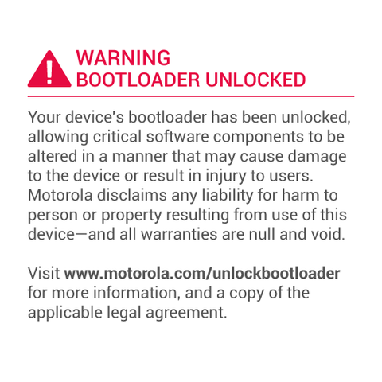

Veja como realizar root no moto E XT1021, XT1022 e instalar Recovery Custom
Ao por as mãos em um novo aparelho um dos grandes passos do usuário intermediário é "Como realizar Root?", e isso não é uma coisa de outro mundo, se você deseja se libertar das garras da Motorola e dar liberdade ao seu Moto E seja ele a versão XT1021 ou a XT1022 realizar root é a porta para as customizações continue com esse tutorial pois o iremos dar inicio neste instante.
Para esse tutorial é nescessário que tenha o Bootloader desbloqueado, se não o tem, veja como desbloquea-lo Aqui.
Para esse tutorial você irá precisar:
Após ter baixado os arquivos listados acima, extraia os arquivos fastboot & adb, Twrp.rar e instale os Drives USB da Motorola.
-
Passe o arquivo Twrp.img para a pasta adb & Fastboot.
Passe o arquivo SuperSU.zip para a memória interna do aparelho.
Instalar Recovery Customizada
Abra a pasta Mfastboot - Adb e pressione a tecla SHIFT + a segunda tecla do mouse agora escolha 'Abrir janela de comando aqui'.
Vamos por o aparelho em modo Fastboot, para isso segure o botão Power e volume menos por 5 segundos e solte.
-
No prompt que abrirá digite fastboot flash recovery twrp.img e pressione a tecla Enter, isto para instalar a recovery customizada.
Instalar Root
Após o passo anterior desça com a tecla de Vol -, até Recovery e confirme com a tecla de Vol +.
No menu de recovery, faça o seguinte procedimento, lembrando de ter passado o SuperSU.zip baixado para o armazenamento interno do dispositivo.
- wipe cache
- install zip from sdcard > 0 > SuperSU.zip
- reboot
-
Consertar o Logo
Para removermos este aviso desligue o aparelho. Com ele desligado ponha-o em modo Fastboot e o conecte no pc.
Passe o arquivo logo.bin para a pasta Fastboot que você baixou e Volte para o prompt do Windows que ficou aberto, execute os seguintes comandos:
- mfastboot flash logo logo.bin
- mfastboot reboot
-

Agora você não será mais incomodado por esse aviso e o seu Moto G possuirá acesso Root e Recovery custom dando-lhe a tão liberdade de customiza-lo ao seu modo, então, lembre-se "Grandes poderes vem com grandes responsabilidades" por isso use com moderação.
Então se obteve problemas com alguns dos passos listados acima, fique tranquilo a deixar os seus comentários logo abaixo.